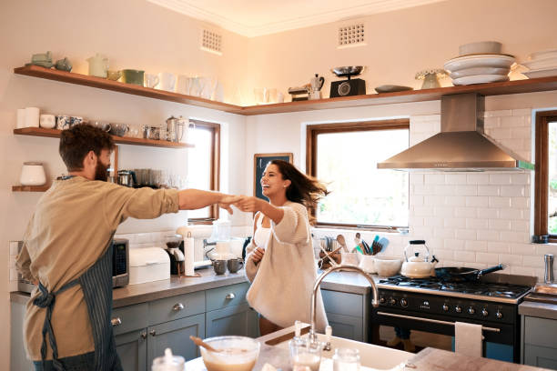
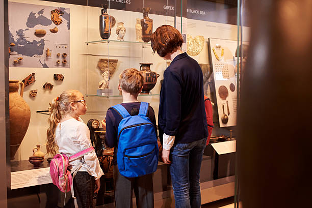
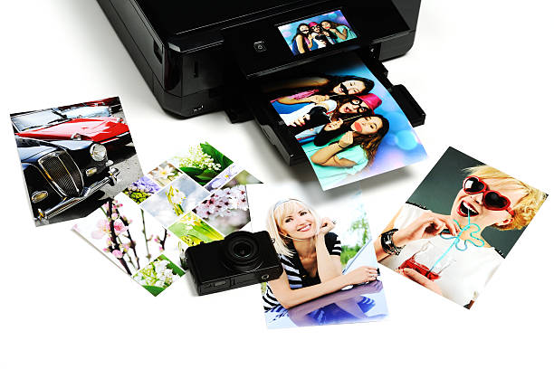

{kind=link}
{kind=link}
{kind=link}
{kind=link}
{kind=link}
{kind=link}
{kind=link}
{kind=link}
{kind=link}
Copyright © 2020 Company Name . Template: Moonlight
About
Essentially, the purpose of photography is to communicate and document moments in time. When you take a photograph and share it with others, you're showing a moment that was frozen through a picture. This moment can tell someone many things, from the environment to what people are doing.
This project aims to provide knowledge about photography. With the use of this platform, we can share tips and tutorials on how to achieve great photos. We want to be a part of your achievements and success in the field of photography. We also want to encourage and inspire others in terms of photography.

Connect with the world
You might not master any other language than your mother tongue, but you know it’s true: a picture is worth a thousand words. Photography can really bring you closer to people around the world as images are a universal language anyone can understand and being touched by. What you want to communicate with your portrait or your street photography shot does not need a caption, emotions will work their way into everyone’s heart.
Capture history
With Photography, you have the chance to capture crucial events in-the-making. From politics to sports and music, as well as everyday life, you preserve reality as it is in a specific time frame, collecting irreplaceable information for the archaeologists of the future.
See the beauty in your everyday life
Develop attention to details in your routine and start to see what surrounds you with fresh eyes: we know you are already doing it when waiting for the right moment, searching for the perfect composition every time you shoot with your camera. Challenge yourself to find beauty and character everywhere and you’ll then discover even more that you initially expected. No corner will be dull, no sky will be flat when looking for the perfect shot. The streets, the café, the faces you know so well will become the most desirable subject.
Tell your story
Nothing is more important than what you see. Maybe others will relate to you or maybe not, either way you’ll have the opportunity to show the reality with your own eyes and make people knowing you through your images. There is always a story that needs to be told, this is the time to narrate yours.
Make you feel happier
Photography is art and you are in fact an artisan of reality. Taking pictures is the right dose of happiness that comes from creating something unique you made: this is indeed special and you should do it all the time.

Experiment
Discover the wide world of photography styles, give different types of cameras a try. Photography is more than just your phone. In fact, put it down it, switch on to life without a black screen filtering it for you. Venture into the pleasant immediateness of an instant camera, or dive into the interchangeable lenses. Photography is a bridge between art and science that you can explore infinitely and surprise yourself with.
Learn History
Photography has been the voice of the most human history, an irreplaceable tool to record memories and highlight every aspect of our recent history. You can honour the past by going through the most iconic shots that marked a specific event in the last two centuries, or even just searching over your city archives to find out how much photography material was produced and get inspired to do the same to continue the cycle.


Find your message
What makes you happy when shooting is the first clue of what you are trying to say with Photography. Finding your message is essentially discovering your style. Perhaps you love taking pictures of wildlife and your message would be bringing awareness around its preservation and protection. Once you know what your message is it would be very easy to motivate yourself to plan and shoot more.
Take time to go through your old photos and print them out
You have been taking photos for years now all those folders take most of the space on your cloud storage. It’s time to go through them, relive the beautiful moments and analyse the evolution of your photography style. Find your favourites and print them, don’t be shy. Be proud of your work and happy about your memories: your shots are meant to be seen, this is what Photography is all about.

Explore the art of Selfie
You might think this is a current trend, however even painters dedicated their work and time to portray themselves. The first selfie was captured in 1839 by Robert Cornelius in Philadelphia and we are still talking about it! A selfie can be more than just a mood of the day and take you as far as writing a story about yourself: a year plan of taking a shot of yourself every day or having the same composition in different locations all around the world are just examples of the most popular ideas. What’s unique about this idea is that you will be still different even if someone else is doing it.